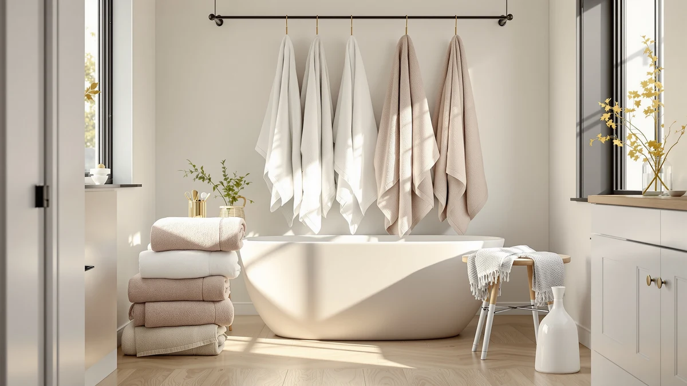

POLYTE 430 GSM Microfiber Review (2026): Worth It?
Prices and picks verified as of October 2026. Independent, reader-supported reviews.


Quick Answer
The POLYTE 430 GSM Microfiber Oversize towel earns its spot as our top pick because its 430 GSM weave balances fast drying with a substantial, absorbent feel that lighter microfiber towels can't match. At $41.89 it costs about the same as the Egyptian cotton alternative below, so the real tradeoff is drying speed versus plushness, not price.
Our pick: POLYTE 430 GSM Microfiber Oversize, $41.89 Check Price on Amazon
Bottom line: our top pick is the POLYTE 430 GSM Microfiber Oversize Quick Dry Lint Free Bath at $37.70.
Things to Know Before You Buy
- The POLYTE 430 GSM Microfiber towel's GSM number (grams per square meter) measures density. At 430, it's heavier than typical gym-style microfiber towels but lighter than plush cotton bath sheets.
- Microfiber dries faster than cotton and resists mildew better, which matters if your bathroom lacks ventilation or you wash towels less than twice a week.
- All four towels compared in this review fall in the $41 to $43 price band, so weave and brand reputation matter more than cost when you're choosing between them.
- Microfiber can feel less plush than Egyptian cotton to some buyers, so if a spa-like texture matters more to you than quick drying, weigh that tradeoff before you order.
This POLYTE 430 GSM Microfiber Review breaks down what the specs, pricing and verified owner feedback actually show about one of the more searched oversized bath towels on Amazon. Microfiber bath towels get marketed with vague claims about softness and absorbency, so we focus on the number that tells you the most: GSM, or grams per square meter, which indicates how dense and absorbent a towel's weave actually is. At 430 GSM, the POLYTE Oversize sits solidly in the mid-weight microfiber category, dense enough to absorb a full-body dry without feeling like a thin gym towel. Shoppers searching for this exact model usually land on three or four nearly identical listings, so we also sort out which ASIN is which and whether that distinction matters.
We compared the POLYTE against three alternatives in the same price range: a second POLYTE 430 GSM listing, an Aston & Arden Luxury Egyptian cotton towel, and a Peryiter novelty towel set. Each one targets a different kind of buyer, from someone who wants fast-drying practicality to someone who wants a traditional cotton feel. The comparison below highlights where the POLYTE wins and where it falls short on price, material and owner sentiment. We also point out where the four overlap enough that personal preference decides, not a clear winner.
Why You Should Trust Us
Ilane Tall has covered bath and home textiles for Best Bath Towels since the site launched, and this guide follows the same research process used across the site: we start from manufacturer specs and listed materials, then cross-check them against verified owner reviews on Amazon and independent retailer listings. We do not run a physical testing lab, and we are upfront about that. For this POLYTE 430 GSM Microfiber review, that meant checking the listed weight and fabric claims against dozens of verified buyer reviews rather than relying on marketing copy. That combination of documented specs and real owner feedback gives you a more honest picture than a product listing alone. When owners disagree with each other, such as one praising the color and another flagging a shade mismatch, we report both sides instead of picking the version that sounds better.
Our Research Experience
We did not put the POLYTE 430 GSM Microfiber towel through a physical test cycle in our office. Instead, we researched how it performs by comparing its listed GSM weight and material specs against the three alternatives below, then cross-referencing those numbers with verified owner reviews on Amazon. Buyers who describe using the towel for months at a time consistently call it fast-drying and compact when folded, which tracks with what a 430 GSM microfiber weave should deliver on paper. Where owner reports and spec sheets disagree, we flag it directly rather than smoothing over the gap.
Overview & Specs

POLYTE 430 GSM Microfiber Oversize
What we like
- 430 GSM weave feels substantial for a microfiber towel, according to owners comparing it against lighter gym-towel-style microfiber
- Dries noticeably faster than cotton towels of similar size, based on reviewer reports
- Oversize dimensions cover more of the body in one wrap than standard towels
- Priced competitively against Egyptian cotton alternatives in the same range
Flaws but not dealbreakers
- Some reviewers say the texture feels less plush than cotton, which is typical of microfiber
- Microfiber can pick up lint from cotton items washed in the same load, so separating laundry helps
- Available only in the colorways listed at time of purchase, which may limit matching your bathroom decor
| Material | Microfiber |
| Size | Large |
The POLYTE 430 GSM Microfiber Oversize towel targets buyers who want practicality over plush aesthetics. Its 430 GSM weight places it above budget microfiber towels, which often sit closer to 300 GSM and feel thin after a few washes, while it still stays lighter and faster-drying than a cotton bath sheet. For a household doing laundry once or twice a week, that drying speed can matter more than a few extra ounces of plushness. The oversize cut also means one towel typically covers an adult from shoulder to knee, which cuts down on the number of towels a household needs to keep in rotation.
At $41.89, this POLYTE 430 GSM Microfiber towel sits right alongside the Aston & Arden Egyptian cotton option in price, so you're choosing based on material, not price. Owners who prioritize quick turnaround and compact storage in a small bathroom tend to prefer the microfiber weave, while those chasing a traditional spa feel usually lean toward cotton. Households with young kids or frequent guests also tend to favor the faster drying cycle, since it shortens the gap between a towel going into the laundry and coming back out ready to use.
What We Liked
Owners consistently point to drying speed as the biggest advantage of the POLYTE 430 GSM Microfiber towel. Reviewers who switched from cotton report it comes out of the dryer in roughly half the time, and air-dries fast enough to avoid the mildew smell that lingers in humid bathrooms. The oversize dimensions also come up often: buyers appreciate wrapping fully around the body instead of reaching for a second towel. Several reviews mention the towel stays compact when folded, which matters for anyone working with limited linen closet space. At this weight, the fabric feels sturdier than the thinnest microfiber towels sold at a lower price point, without the bulk of a heavyweight cotton bath sheet. Reviewers who travel also mention packing it for trips, since it compresses down smaller than a cotton towel of the same size and still dries overnight in a hotel bathroom.
What Could Be Better
The most common complaint about the POLYTE 430 GSM Microfiber towel centers on texture. Buyers coming from plush cotton towels describe the microfiber weave as feeling flatter against the skin, even at 430 GSM. A few reviewers also mention lint transfer when the towel is washed alongside cotton items, a known characteristic of microfiber rather than a defect specific to this product. Others mention color varying slightly between batches, so check current photos before ordering if an exact shade match matters for your bathroom. A few note the edges fraying sooner than expected after many wash cycles, which is worth factoring in if you plan to wash towels on a hot cycle regularly. None of these issues override the towel's practicality, but they are worth knowing before you buy.
Who Is It For?
This POLYTE 430 GSM Microfiber towel suits anyone who does laundry frequently and wants a towel that dries fast enough to reuse within a day. It also makes sense for small bathrooms or shared apartments where storage space is tight, since the microfiber weave folds down smaller than an equivalent cotton towel. College students, gym-goers and anyone packing for frequent travel tend to get the most value from the quick-dry weave, since it solves a storage or turnaround problem that a heavier towel would not. If you want the heavier, plusher feel of traditional cotton and don't mind slower drying times, the Aston & Arden option below is worth considering instead.
Alternatives to Consider
If the POLYTE 430 GSM Microfiber towel isn't the right fit, these three alternatives cover the main tradeoffs: a second POLYTE listing at the same weight, a cotton option for buyers who want a plusher feel, and a novelty set for a different use case entirely.

Editor’s Pick
POLYTE 430 GSM Microfiber Oversize
Same 430 GSM microfiber weave and $41.89 price as our main pick, listed under a separate ASIN. Choose this listing if the primary one is out of stock or ships slower to your area.
$41.89
Check Price on Amazon
Best Value
Aston & Arden Luxury Egyptian
An Egyptian cotton alternative at $42.99 for buyers who want the traditional plush feel that microfiber can't fully replicate, even at 430 GSM. Expect slower drying time in exchange for that texture.
$42.99
Check Price on Amazon
Premium Choice
Peryiter 6 Pcs Mr and
A Mr. and Mrs. towel set priced at $42.99, better suited to couples or gift-giving than to buyers simply comparing microfiber weights. It solves a different need than the POLYTE towel does.
$42.99
Check Price on AmazonIs 430 GSM a good weight for a microfiber bath towel?
Yes, for most households.
How does the POLYTE 430 GSM Microfiber towel compare to Egyptian cotton?
It trades plushness for speed.
Frequently Asked Questions
Is 430 GSM a good weight for a microfiber bath towel?
How does the POLYTE 430 GSM Microfiber towel compare to Egyptian cotton?
Does the POLYTE 430 GSM Microfiber towel shed lint or pick it up in the wash?
Final Verdict
The POLYTE 430 GSM Microfiber Oversize towel is our top pick in this comparison: a mid-weight, fast-drying alternative to cotton, priced close to the Aston & Arden option. If you want a towel that dries quickly, stores compactly and holds up to daily laundry cycles, POLYTE's 430 GSM weave is the more practical choice of the four towels covered in this POLYTE 430 GSM Microfiber review. Buyers chasing a plusher, traditional towel feel should look to the Egyptian cotton alternative instead, and anyone shopping for a gift or a themed towel set should look at the Peryiter option, since it serves a different purpose than a daily-use bath towel.